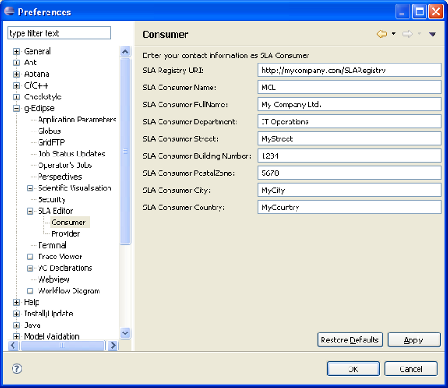

Before the user can create SLA with a dedicated editor, he must enter a few data in the preference pages. Under the g-Eclipse tree node, there is an item called SLA Editor. Depending on the role the g-Eclipse user plays, one has to enter the preferences for Consumer or Provider of Services. In the first field, enter the URI for the SLA Registry to which as Provider publishes his Service Level Templates and from which Consumers query potential Service offers. The other preference fields are the address of the consumer/provider. These values will be entered in the SLT and SLA automatically later.
